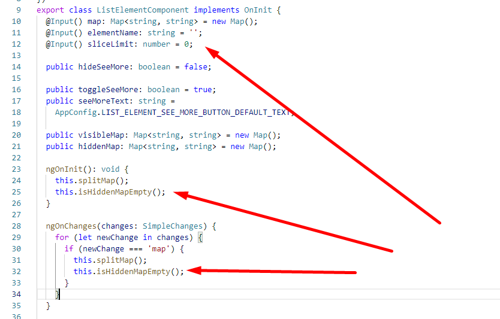
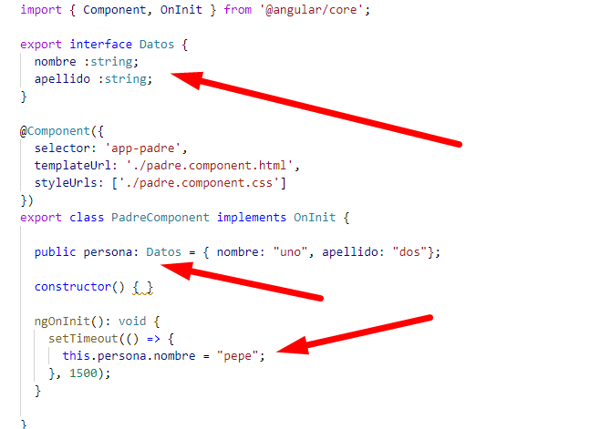
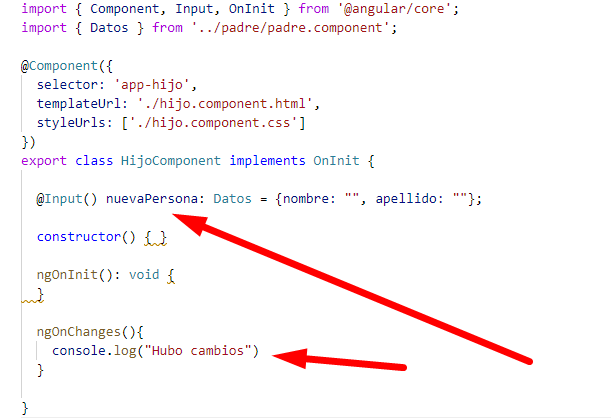
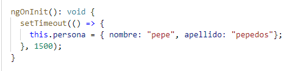

Como utilizar ngOnChanges cuando se producen cambios en las variables @input
Las variables que están definidas como @Input estan sincronizadas permanentemente, esto es, si el valor de una variable cambia en el padre automaticamente cambia el valor en el hijo, de todos modos a veces cuando cambian estos valores podemos estar interesados en lanzar algunas funciones, para que se hagan ciertas operaciones sobre los datos que se han actualizado en las variables
Un ejemplo es el siguiente:
En este ejemplo se llaman a las funciones splitMap() y isHiddenMapEmpty() en el ngOnInit, estas funciones trabajan con las variables que estan definidas como @Input, por lo tanto cuando estas variables cambian en el padre automaticamente cambian tambien en el hijo, pero las funciones que trabajan con esas variables no se vuelven a ejecutar cuando cambia el valor de las variables, si necesitamos volver a ejecutar esas funciones para que tengan en cuenta los nuevos valores de las variables tenemos que indicarselo mediante la funcion ngOnChanges
Para utilizar la funcion ngOnChanges solo tenemos que definirla tal que así:
ngOnChanges(changes: SimpleChanges) {
for (let newChange in changes) {
if (newChange === 'map') {
this.splitMap();
this.isHiddenMapEmpty();
}
}
}La funcion se ejecuta cada vez que cambia una de las variables establecidas como @Input, esta funcion recibe como parametro un objeto que nos permite recoger los nuevos valores de las variables, en caso de que solo queramos ejecutar algo cuando se cambie la variable que nosotros queramos tenemos que recorrer el objeto para buscar si se ha modificado la variable que nosotros queremos.
ngOnChanges(changes: SimpleChanges) {
for (let newChange in changes) { //Bucle para recorrer el objeto con todas las variable @Input
if (newChange === 'map') { //Solo ejecutamos en caso de que la variable que queramos esté en el objeto de cambios
this.splitMap();
this.isHiddenMapEmpty();
}
}
}NOTA PARA TESTING: Si queremos declarar un objeto SimpleChanges para mockearlo en un test tenemos que hacerlo de la siguiente manera:
let changes: SimpleChanges = {
["map"]:{
previousValue: "",
currentValue: skillMapMock,
firstChange:true,
isFirstChange:()=>false}
}; De esta manera podemos llamar a la funcion ngOnChanges manualmente pasandole el objeto changes:
ngOnChanges(changes);
Cuando pasamos un objeto como @Input el ngOnChanges no detecta los cambios si cambiamos el valor de uno de los atributos del objeto, ya que la referencía al objeto es la misma.
Ejemplo:
Componente padre:
Componente hijo:
En ese caso el ngOnChanges no funcionaría, porque en el componente padre (en la funcion timeout), solo estamos modificando un atributo del objeto y el ngOnChanges no lo detecta
Una solución sería asignar un objeto nuevo a la variable para que el ngOnChanges lo detecte
ngOnChanges | Angular